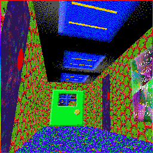
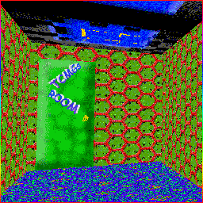
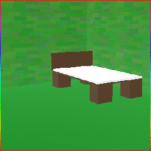
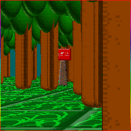
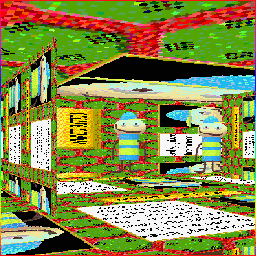
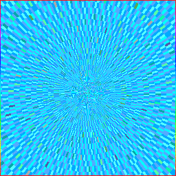

ThatCoolModderGuy Series | The Expanded ThatCoolModderGuy Wiki
The "ThatCoolModderGuy Series" contains the following entries;
"ThatCoolModderGuys Basics in Mods and Edits!",
"ThatCoolModderGuy2",
"ThatCoolModderGuys APARTMENT!",
"ThatCoolModderGuys Basics EASY/HARD PACK!"
Click a location to access the related pages!
Mortal plane locations:




Afterlife locations:


Return to Main Page